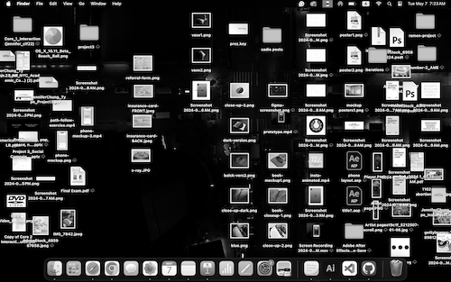

right now it's 1:23 A.M. and i should really be sleeping but i want to say something really random.
i've thought about this before, and questioned of all things why this comes to mind, but i couldn't stop thinking about the bouncing dvd logo.
{kind=link}
the bouncing dvd logo (or dvd screensaver) is an animated screensaver on american dvd players, that bounces across the screen and changes color when it hits a corner.
at my grandparent’s house, there used to be an old, bulky television that was on its last legs. the only channel that seemed to work at the time was the news. when my sister and i would try to insert cds, the screensaver would pop up and we’d watch it bouncing back and forth across the screen, hoping that it would hit one of the corners. at the time, there wasn't much else to do. ipads and cocomelon didn't exist then, and life was a lot simpler.
i wish life were as simple as staring at a bouncing logo. i wish life were as simple as staring at a bouncing logo.
i guess this, in a way, is sort of related to my love-hate relationship with being busy and juggling too many things at once, putting things off to the side until i have to do them last-minute, yet finding that i am most productive when i have the most on my plate. looking at a bouncing logo is only one thing i needed to juggle at the moment, when i was very young. i had so few to juggle.
at this point, i should be able to better complete tasks, check things off on a to-do list (time management skills, woo hoo). but right now, i don't want all these things to juggle, all these tasks that are crowding my brain and my desktop. i feel overwhelmed and burned out. hopefully i get better.
{kind=link}
another point, burnout.
it started halfway through this semester, i think. or maybe it was always there. i'm not sure, but in past semesters i rarely missed a class. hardly slacked behind on my work or left things unfinished not because i didn't want to finish them, but because i just didn't have the time to. i feel like especially now, time is shrinking for me. there's (literally) so much i have to do right now but instead of actually doing the stuff that i need to do, i'm typing this instead.